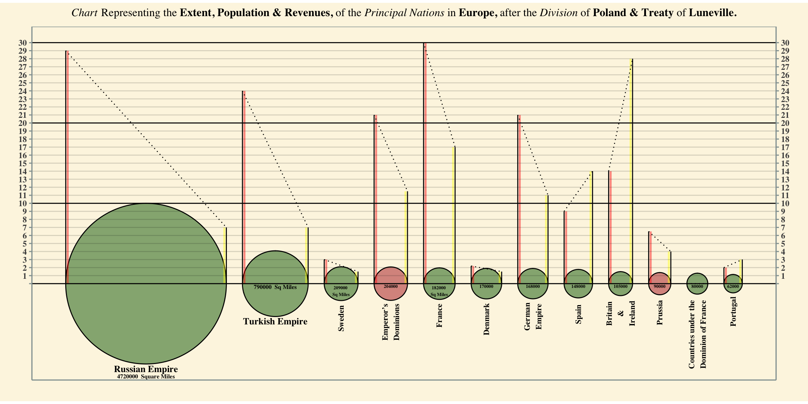
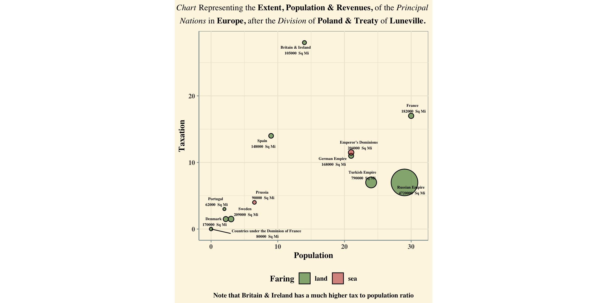

A reconstruction and modernization of a 1801 William Playfair Graph.
R
ggplot
Data Visualization
Author
Dane Winterboer
Published
October 10, 2024
Critique
Playfair’s visualization effectively leverages the use of vertical lines to demonstrate discrepancies in population and taxation. The lines used in his graphic are akin to modern day use of bars in bar plots, in the manner that the vertical height/final resting place of the line/bar designates the value of the mapped metric. Since both population and taxation are mapped to similarly scales, his visualization essentially takes advantage of a dual y-axis, allowing for the viewer to directly and easily compare a county’s population to its taxation. Additionally, a viewers perception is explicitly drawn towards any contrasts in tax and population via the dashed segment that connects a country’s measures. This connecting segment not only draws perception, but also helps viewers distinguish between countries via the creation of perceptual groupings.
Although not aiding in Playfair’s goal of demonstrating unfair taxation, his use of circles to represent a country’s square area is effective. The area of the circles appear to be properly mapped to a country’s square area, and not mapped to the radius of the circles. Furthermore, the circles are plotted horizontally in descending order, establishing a clear hierarchy. However, the circles do distract from Playfair’s primary thesis. The size, coloring, and “weight” of the circles draws immediate attention towards the bottom of the graph - which is away from the lines/measures of population and taxation. Without knowing Playfair’s intentions, one may assume that he is attempting to assert an argument not about the relation of population and taxation, but rather the relationship between a country’s area and population, or a country’s area and taxation, and/or any combination of the three.
Playfair’s use of the color in the graphic is ineffective and confusing. Particularity because he is using multiple color systems at one time. The vertical population and taxation lines have red and yellow highlights (respectively), some of the circles are colored via if their respective country has a land or sea faring economy, some of the circles are colored internally for their land mass location (Europe, Asia, Africa), and the German Empire’s circle is colored in its own system which correlates with a Venn diagram bellow the circle. Not only are there multiple color systems, but they all share the same colors - red, green, and yellow (this may have been due to a restriction of technology at the time of this visualization’s creation). Color creates implied groups and correlations within visualizations. Thus, when one first perceives the visualization, there are implicit connections: all of the red, yellow, and green elements must be alike. Reading Playfair’s writings on the graph dispels these connections; however, visualizations should not have to rely on lengthy writings. It also may have been prudent to include a key for color somewhere on the graph. Overall, Playfair tried to achieve too much with the “color element” of his graphic, resulting in confusing perceptional groupings.
Despite the critiques on Playfair’s visualization, it does effectively demonstrate his thesis that Britain and Ireland (England) appear to be more heavily taxed as their taxation to population ration is substantially larger than the other counties shown.
Re-creation
Data Preperation
Show Code
DATA <- DATA %>%mutate(Country =as.factor(Country)) %>%mutate(r =sqrt(Area /3.14))DATA <- DATA %>%mutate(scaledR = r /max(DATA$r, na.rm =TRUE) *10)DATA$center[1] <- DATA$scaledR[1]spaceBetweenCountries <-2for (x in2:nrow(DATA)) { DATA$center[x] <- DATA$center[x -1] + DATA$scaledR[x -1] + spaceBetweenCountries + DATA$scaledR[x]}DATA <- DATA %>%mutate(circleLabels =str_replace_all(Country, " ", "\n"))DATA$circleLabels[11] <-"Countries under the\nDominion of France"DATA$circLabelAdj <-c(0, 0,2.2, 2.7, 2, 2.5, 2.2, 2, 2.2, 2.2, 5, 2.3)DATA$Faring <-c("land", "land", "land", "sea", "land", "land", "land", "land","land", "sea", "land", "land")# creating plot title w/ formatingplotTitle <-expression(paste(italic("Chart")," Representing the ",bold("Extent, Population & Revenues, "),"of the ", italic("Principal Nations "),"in ",bold("Europe, "),"after the ",italic("Division "),"of ",bold("Poland & Treaty "),"of ",bold("Luneville.")))
Reconstruction
Show Code
DATA %>%ggplot() +geom_circle(aes(x0 = center, y0 =0, r = scaledR, fill = Faring), # circlesalpha =0.5) +geom_segment(aes(x = center - scaledR +0.25, y =0, yend = Population),color ="red", linewidth =1, alpha =0.45) +# red linesgeom_segment(aes(x = center - scaledR, y =0, yend = Population)) +geom_segment(aes(x = center + scaledR -0.25, y =0, yend = Taxation),color ="yellow", linewidth =1, alpha =0.45) +# yellow linesgeom_segment(aes(x = center + scaledR, y =0, yend = Taxation)) +geom_segment(aes(x = center - scaledR, xend = center + scaledR, # connecty = Population, yend = Taxation), linetype ="dotted") +geom_text(data = DATA[1:2,], # Russia & Turkish Labelsaes(x = center, y =0- scaledR, label = Country),vjust =1.25, size =3.5, family ="serif", fontface ="bold") +geom_text(data = DATA[3:12,], # Country labels for remainingaes(x = center, y =0- scaledR - circLabelAdj,label = circleLabels),angle =90, hjust =0.5, size =3, family ="serif",fontface ="bold") +geom_text(data = DATA[1,], # Russia Sq mileaes(x = center, y =0- scaledR, label =paste(Area," Square Miles")),vjust =3.5, size =2.25, family ="serif", fontface ="bold") +geom_text(data = DATA[2,], # Turkish Sq mileaes(x = center, y =0, label =paste(Area," Sq Miles")),vjust =1.25, size =2.25, family ="serif", fontface ="bold") +geom_text(data = DATA[c(3,5),], # Swedish & French Sq mileaes(x = center, y =0, label =paste(Area,"\nSq Miles")),vjust =1.25, size =1.75, family ="serif", fontface ="bold") +geom_text(data = DATA[c(4, 6, 7, 8, 9, 10, 11, 12),],#miles for everyone elseaes(x = center, y =0, label =paste(Area)),vjust =1.25, size =1.75, family ="serif", fontface ="bold") +geom_hline(yintercept =seq(0, 30, 10)) +geom_hline(yintercept =seq(0, 30, 1), alpha =0.15) +scale_y_continuous(breaks =seq(0, 30, 1),sec.axis =dup_axis(),labels =c("", seq(1, 30, 1))) +scale_fill_manual(values =c("darkgreen", "firebrick")) +labs(title = plotTitle,x ="",y ="") +coord_equal() +theme_solarized() +theme(axis.text.y =element_text(size =9),panel.grid.major.y =element_blank(),panel.grid.minor.y =element_blank(),panel.grid.major.x =element_blank(),panel.grid.minor.x =element_blank(),axis.text.x =element_blank(),axis.ticks.x =element_blank(),plot.title =element_text(size =12, hjust =0.5,family ="serif", color ="black"),text =element_text(family ="serif", color ="black", face ="bold"),legend.position ="none")

New Data Visulization
Data Preperation
Show Code
# data prepDATA <- DATA %>%mutate(dotLabels =paste(Country, "\n", Area, " Sq Mi"))# plot title w/ formattingplotTitle <-expression(atop(paste(italic("Chart")," Representing the ",bold("Extent, Population & Revenues, "),"of the ",italic("Principal")),paste(italic("Nations "),"in ",bold("Europe, "),"after the ",italic("Division "),"of ",bold("Poland & Treaty "),"of ",bold("Luneville."))))
New Graph
Show Code
DATA %>%ggplot(aes(x = Population, y = Taxation)) +geom_circle(aes(x0 = Population, y0 = Taxation, r = scaledR/5, fill = Faring),alpha =0.5) +geom_text_repel(aes(label = dotLabels),size =2, family ="serif", fontface ="bold",seed =5) +labs(size ="",title = plotTitle,caption ="Note that Britain & Ireland has a much higher tax to population ratio") +scale_fill_manual(values =c("darkgreen", "firebrick")) +guides(size ="none") +coord_equal() +theme_solarized() +theme(legend.position ="bottom",legend.title =element_text(family ="serif", color ="black"),axis.title =element_text(family ="serif", color ="black",face ="bold"),plot.title =element_text(size =12, hjust =1,family ="serif", color ="black"),plot.caption =element_text(hjust =0.5,family ="serif", color ="black"),text =element_text(family ="serif", color ="black", face ="bold"))

Concluding Explanation
Playfair’s main thesis is to show that England has unfair taxation for its population. Therefore the primary elements of the visualization should attempt to reflect this relationship. Thus, I choose the x and y axis to represent population and taxation (respectively). This allows a viewer to directly see and contrast the population and taxation values of the countries shown, and identify outliers. Immediately, one is able to see that this visualization does support Playfair’s original thesis, as Britain and Ireland (England) break pattern and show a substantially greater taxation for their population. Formatting the primary variables in this way creates a less cluttered visualization as it removes two mapping elements from the original graph, and better utilizes the graphic’s white space.
I attempted to preserve all other original elements of Playfair’s graphic: circle area for country area, labels for countries and square miles, colors for if a country’s economy is land or sea faring, title, font type/face, and a yellowed background. I preserved all of these elements because it was my goal to demonstrate that changing/remapping even just one or two elements can make a significantly more concise visualization.
If I were to improve the visualization further I would change the font type/face. Serif fonts, especially in small sizes like shown in both the original and new graphic, are difficult to read. A sans serif font would be much easier to read. I would remove the yellowed background as it holds no true purpose to the thesis, and I would change the title to be more concise. Lastly, I would take effort in drawing a viewers perception to Britain and Ireland’s circle. Since the main thesis is to highlight it’s peculiarity, I would leverage some gestalt principle of perception to draw viewers’ eyes. Specifically, I would enclose the circle in a red border or point a red arrow towards it.